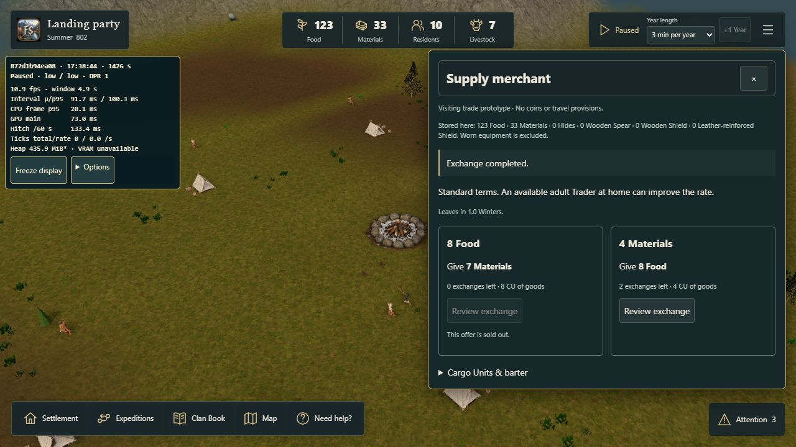
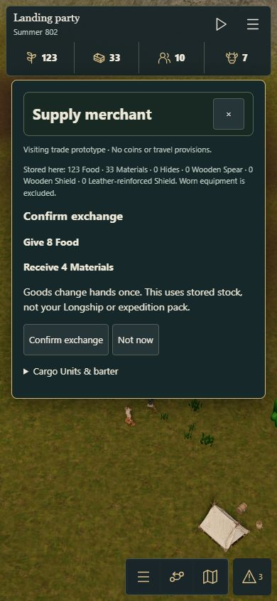

Visiting merchants · #281
This is an opt-in prototype. Existing campaigns retain their own saved rules. Export your campaign before importing either QA checkpoint.
Open trade review Optional performance overlay
Ready-to-trade checkpoints
Supply merchant checkpoint · Craft merchant checkpoint
These physical-island UI fixtures start with 100 Food / 40 Materials, use ordinary Core stepping for two Winters, and perform any equipment crafting through real workers. These QA stocks are not the new-campaign defaults.
- Use the start menu's Recover or import → Import campaign → Continue campaign.
- Open Settlement → Visiting merchant · View offers, or select your Longship. Arrival also appears in Activity Center.
- Review an offer, cancel with Not now, then review and Confirm exchange. Check the exact give/get quantities, remaining lots and stored stocks.
- Try selling stored equipment in the Craft checkpoint. Worn items remain protected. No player Longship or travel pack is charged.
- Close, reopen, export/reload and continue. Offers and stock should remain unchanged. Start the clock and advance one Winter to see departure.
- Try portrait/landscape, scrolling, close, keyboard focus, camera and paused/background return. No automatic purchase occurs.
To test the natural schedule, start a new campaign with the trade link and play two Winters. Ordinary defaults remain 15 Food / 5 Materials. No merchant is guaranteed to solve a shortage.
Prototype rules and limits · Executed rate review and hashes
Owner feedback · 28 October
The redundant clan label and normal-loading diagnostics are hidden. Winter production penalties end at Spring for residents and livestock, including continued saves. Annual consumption and exposure are unchanged. The original affordability measurements/checkpoints below predate this correction and retain their original hashes.
Merchant boat presentation is tracked separately in #294.
Browser evidence
The desktop check confirmed one finite exchange and a free cancellation. The responsive 390px check confirmed a second exact exchange without horizontal overflow. The owner has since tested the mobile merchant flow and reported that it works.

